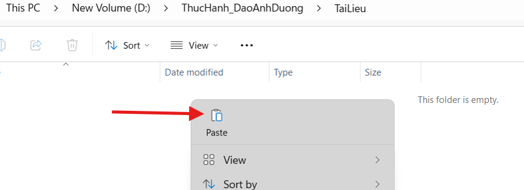
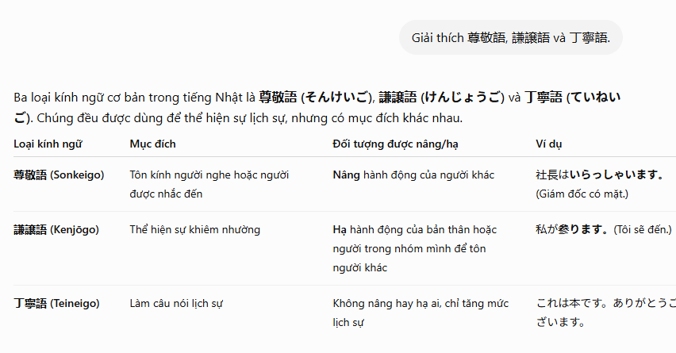
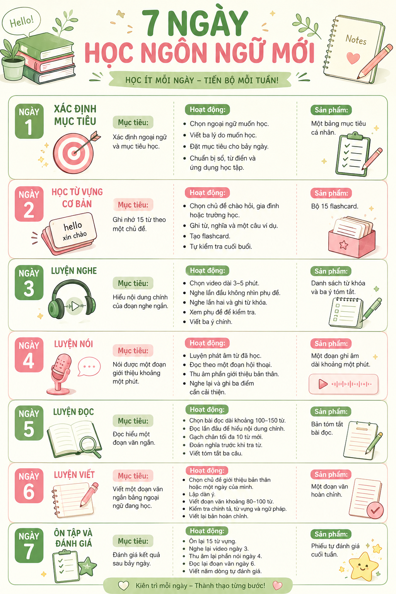
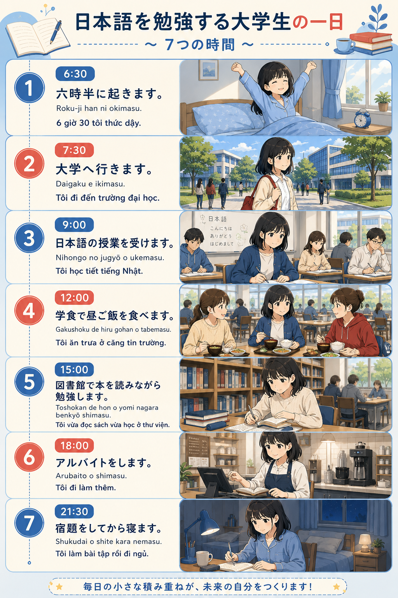

Phạm ThịHuyền Nhi
Sinh viên Ngôn ngữ và Văn hóa Nhật Bản, theo đuổi một hành trình nơi ngôn ngữ gặp giai điệu.
Một cuốn nhật ký giữa
codes và chords.
Mình là Phạm Thị Huyền Nhi, sinh viên K59 ngành Ngôn ngữ và Văn hóa Nhật Bản tại Trường Đại học Ngoại ngữ – ĐHQGHN.
Portfolio này ghi lại sáu bài thực hành về kỹ năng số, tìm kiếm học thuật, prompt engineering, cộng tác trực tuyến và sử dụng AI có trách nhiệm.
継続は力なり。Kiên trì tạo nên sức mạnh.
Nhịp điệu, sự tập trung và khoảng lặng.
Tự do, cảm xúc và những hợp âm mới.
Ngôn ngữ mở ra một cách nhìn khác về thế giới.
Sáu bài tập,
sáu movement.
Mỗi bài giữ nguyên nội dung học thuật, bảng biểu và ảnh minh chứng từ bài nộp gốc; cách trình bày được thiết kế lại để dễ đọc trên web.

ファイル操作Thao tác cơ bản với tệp tin và thư mục
Thực hành 12 thao tác từ tạo thư mục đến khôi phục tệp trong Recycle Bin.
Mở bài tập ↗ 学術情報
学術情報Tìm kiếm và đánh giá thông tin học thuật
Đánh giá tiềm năng của manga có furigana trong việc học kanji và từ vựng.
Mở bài tập ↗
プロンプトViết prompt hiệu quả cho các tác vụ học tập
Ba tác vụ, ba cấp độ prompt và một bảng so sánh chất lượng đầu ra.
Mở bài tập ↗
共同作業Thực hành cộng tác trực tuyến trong dự án nhóm
Mô phỏng quy trình 7 ngày bằng Trello, Google Docs, Canva và Google Drive.
Mở bài tập ↗
生成AISử dụng AI tạo sinh để hỗ trợ sáng tạo nội dung
Thiết kế infographic “Một ngày của sinh viên học tiếng Nhật” với ba công cụ AI.
Mở bài tập ↗ 責任あるAI
責任あるAISử dụng AI có trách nhiệm trong học tập và nghiên cứu
Từ email kính ngữ đến bộ 7 nguyên tắc sử dụng AI có trách nhiệm.
Mở bài tập ↗“Từng thao tác nhỏ tạo thành một năng lực số lớn hơn.”
Từ thao tác cơ bản
đến tư duy có trách nhiệm.
Tổ chức tệp tin, tìm kiếm và đánh giá nguồn học thuật.
Thiết kế prompt, quản lý tiến độ và làm việc trên các nền tảng số.
Kết hợp công cụ tạo sinh với kiểm chứng, chỉnh sửa và trách nhiệm cá nhân.
Learning never stops.
Mỗi sản phẩm là một dấu mốc trong quá trình học cách sử dụng công nghệ chủ động, hiệu quả và có trách nhiệm.
Gửi email cho Nhi